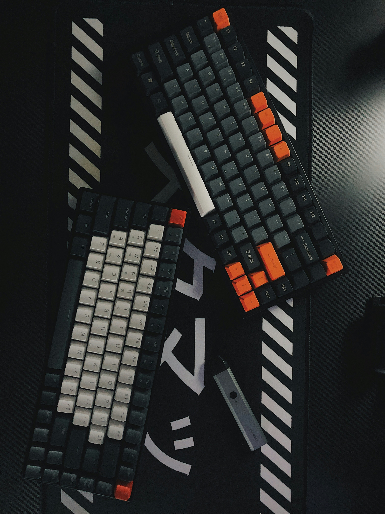
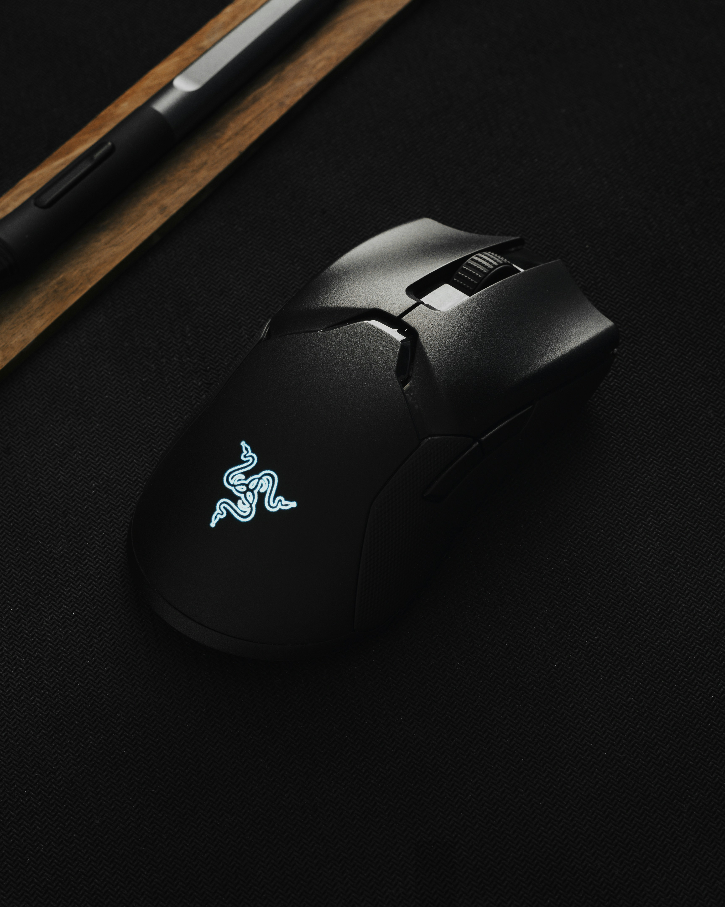
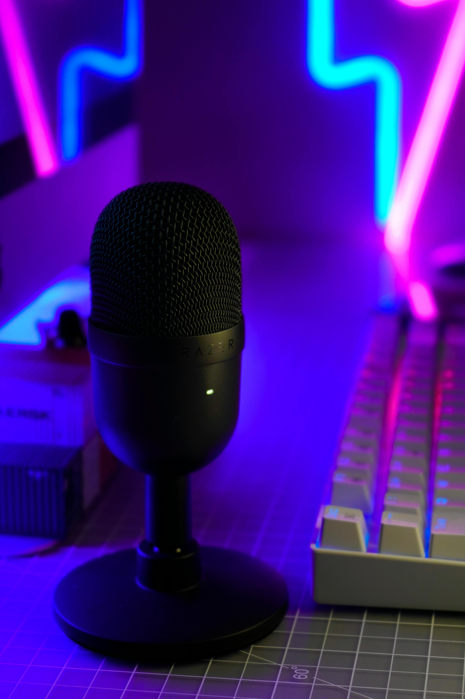
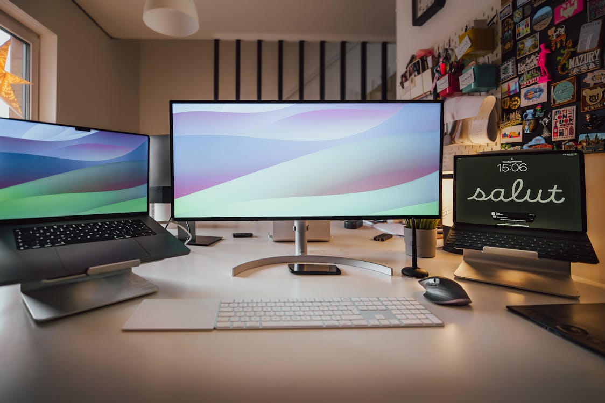
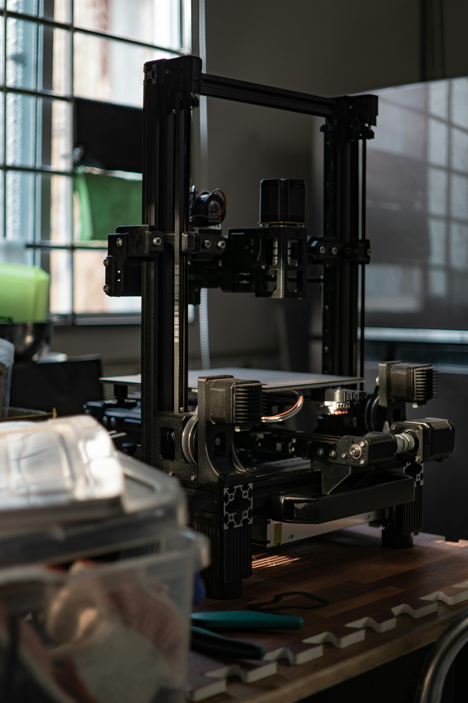
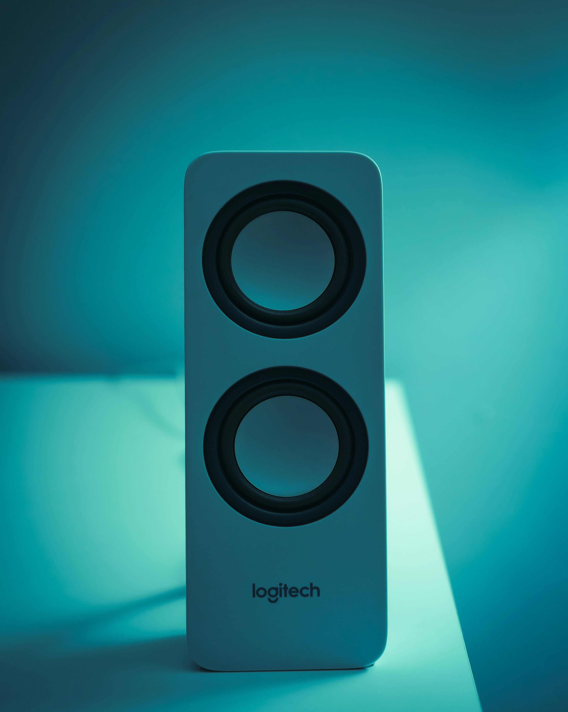
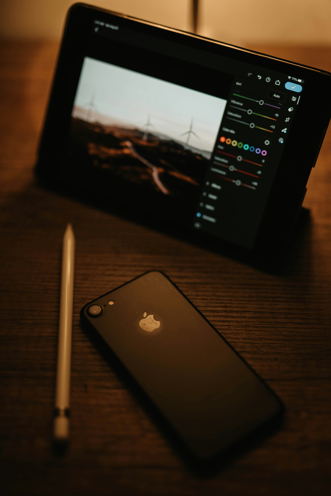
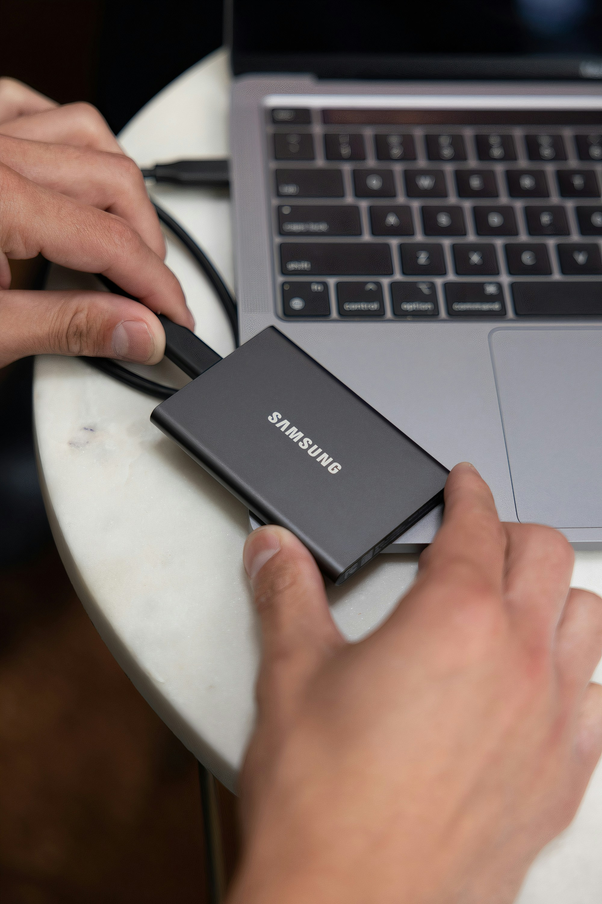
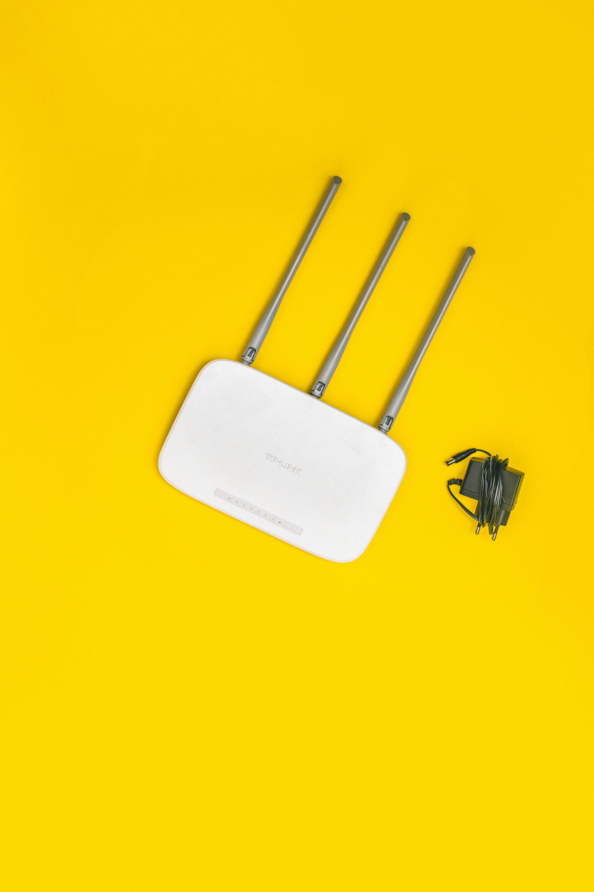

Dispozitive de intrare
Dispozitivele de intrare permit utilizatorului să transmită date și comenzi către calculator.

Tastatură

Mouse

Microfon
Descoperă performanța cu dispozitive periferice
Scroll pentru a exploraDispozitivele periferice reprezintă elemente hardware esențiale care se interconectează cu un sistem de calcul pentru a-i amplifica capacitățile operaționale. Acestea facilitează interacțiunea utilizatorului cu sistemul, permițând atât introducerea de date, cât și recepționarea rezultatelor procesate. Din punct de vedere tehnic, dispozitivele periferice pot fi clasificate în trei categorii principale: dispozitive de intrare, dispozitive de ieșire și dispozitive de stocare.
Dispozitivele de intrare permit utilizatorului să transmită date și comenzi către calculator.



Dispozitivele de ieșire prezintă rezultatele procesării datelor într-o formă accesibilă utilizatorului.



Aceste dispozitive combină ambele funcționalități, permițând atât introducerea cât și extragerea datelor.


